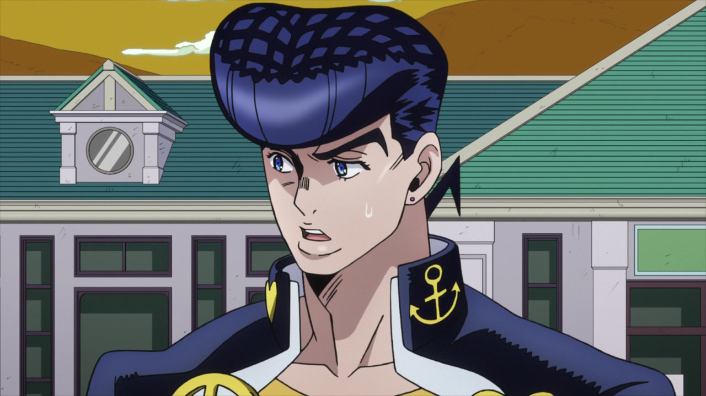
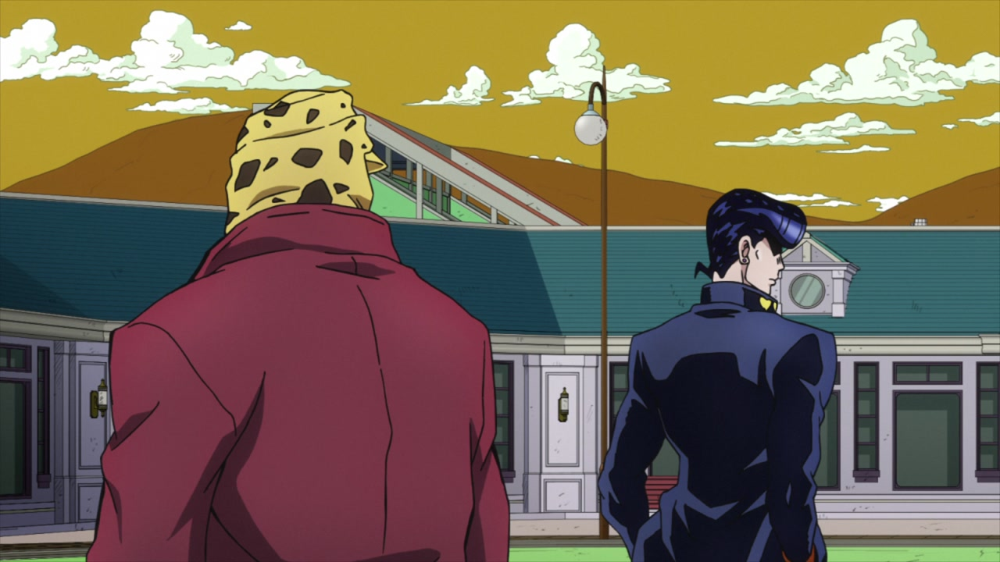
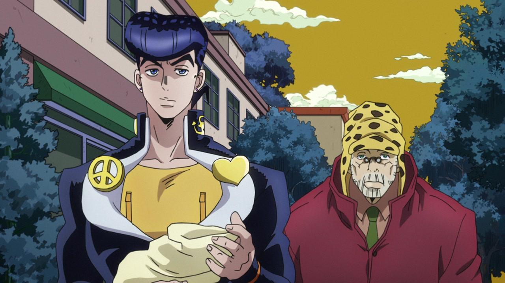
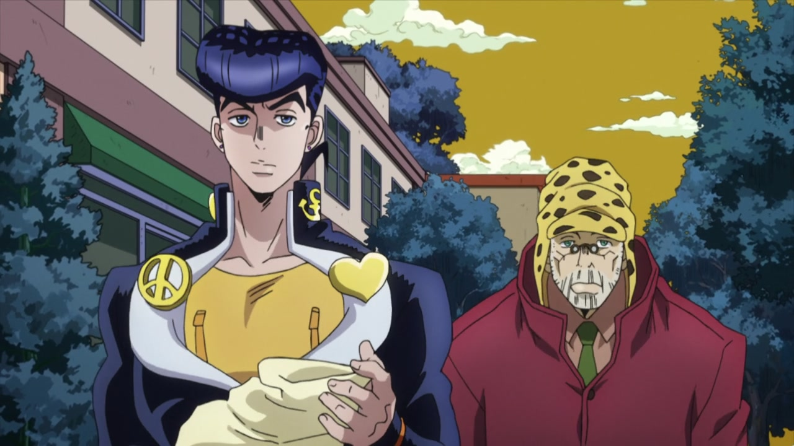
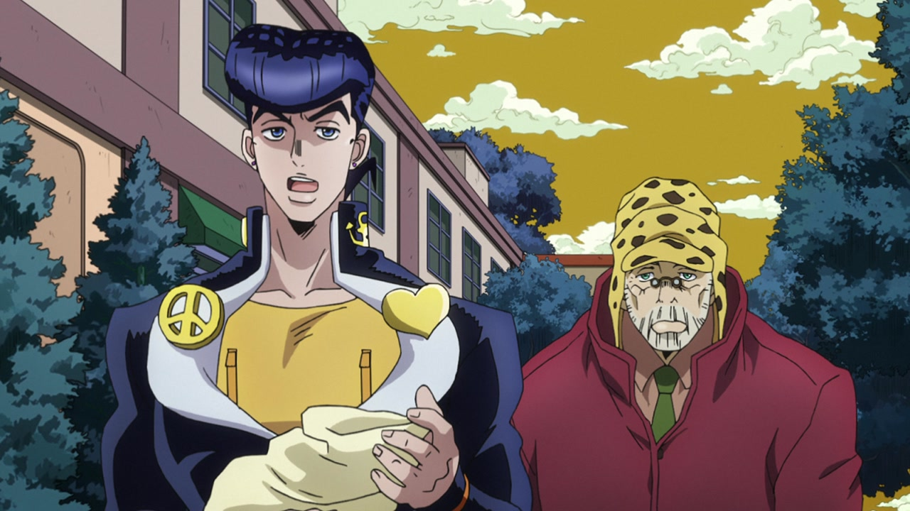
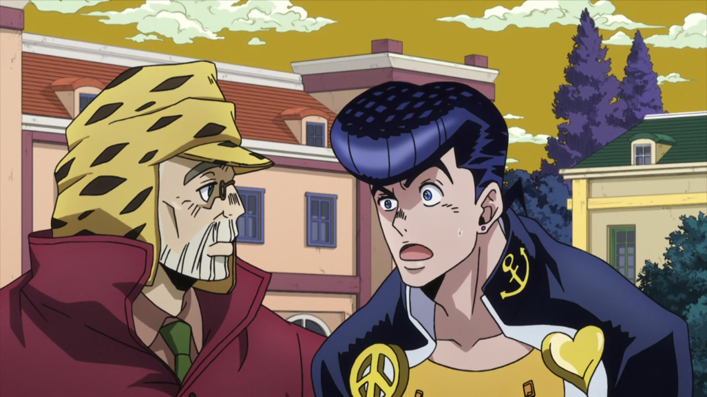
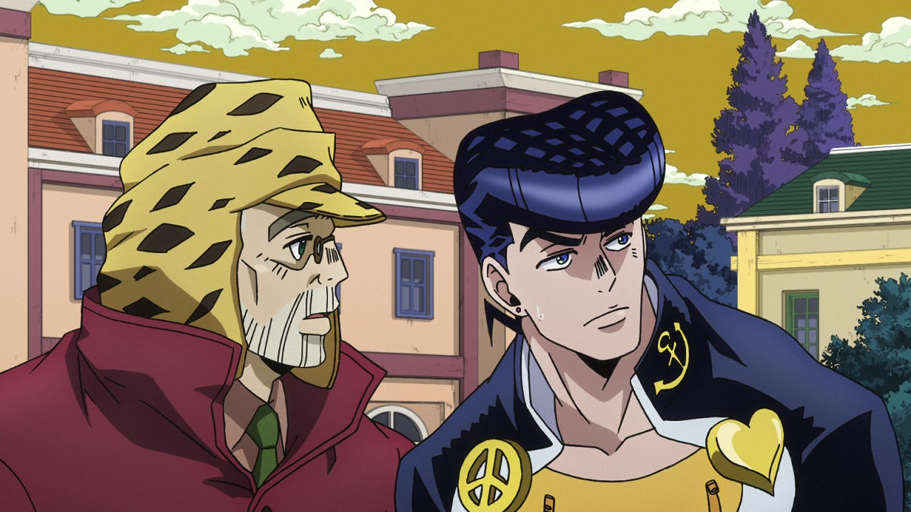
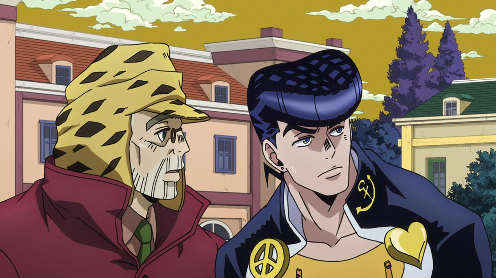
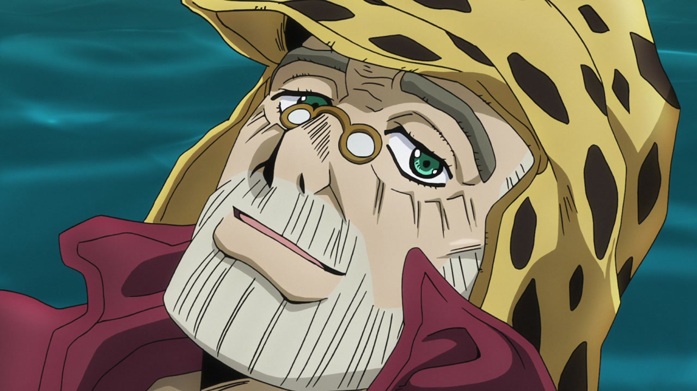
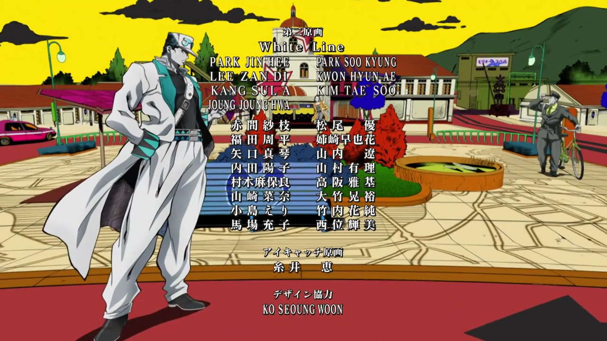

Hey again, everyone! Welcome back to JoJo’s Bizarre Comparison, and would you look at this! We’re back in the PRESENT DAY, PRESENT TIME! Today we’re going to tackle Diamond is Unbreakable again, so you can expect shorter comparisons and more frequent posts. Let’s go!
- Let’s begin this brief comparison with a very minor retouch. In this shot, the corner of Josuke’s jaw has been smoothed and it doesn’t look as angular:

- Here, in the BDs you can see the tip of the second heart on Josuke’s collar:

- In this shot here, Josuke’s nip zips have been redrawn, there’s one line on his school uniform which is less pronounced in the BDs, Joseph’s right eye has been retouched and his coat and hat have a bunch of slight differences. In a couple of frames, a very tiny line on Josuke’s left hand has been removed; his left lapel and Joseph’s entire head have also been retouched:



- Josuke’s mouth has been redrawn here:

- Here, Joseph’s beard and lip have been slightly retouched:
 

- In this bit here, Joseph’s mouth flap is slightly different, and some lines in his beard have been retouched:

- And to close this short comparison, here’s a credit difference! You thought you had seen the last of those, huh? Well, think again! Here, animator and character designer 西位輝実 (Nishii Terumi)’s last Kanji (実) was mistakenly written as 美 in the TV version; this has been fixed. Also, the last four lines in this series of credits have been spaced a bit differently:

Aaand that’s it for Diamond is Unbreakable #13! Nothing too exciting this time around, and I’m afraid that the next two episodes (Let’s Go Hang Out at the Mangaka’s House Parts 1 and 2) aren’t going to be very interesting comparisons too, since they looked amazing even in the TV version. Either way, I hope you enjoyed this, and I’ll see you next time!
Take care!